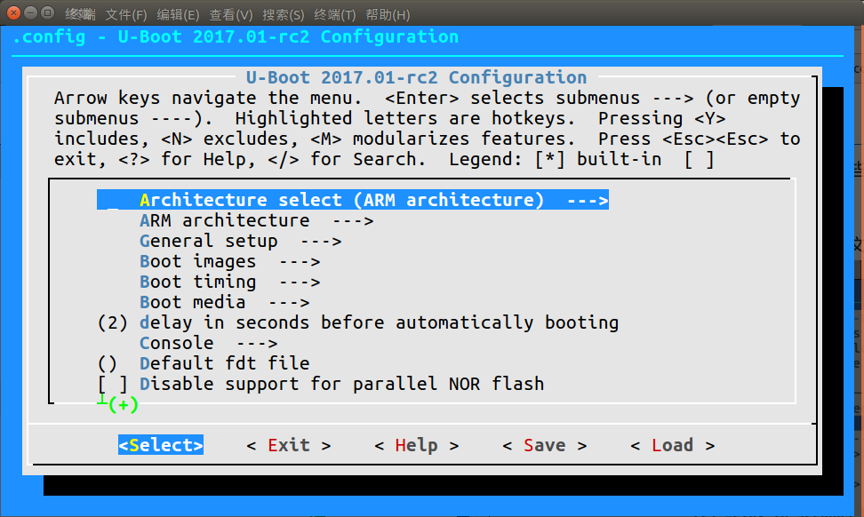
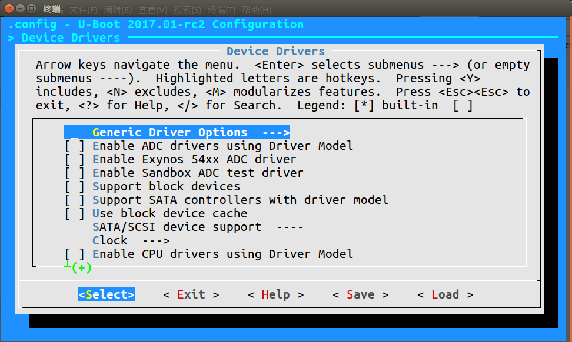
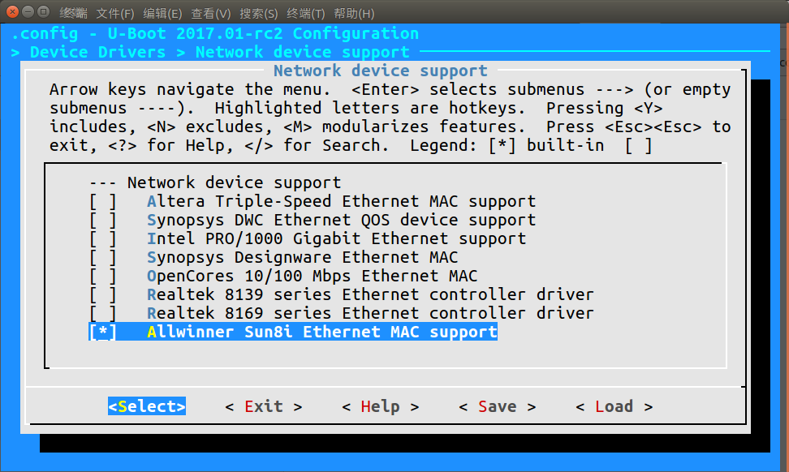
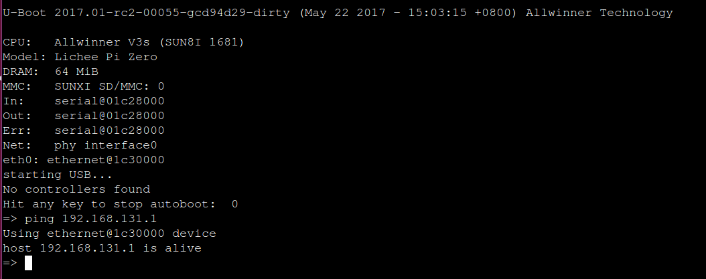
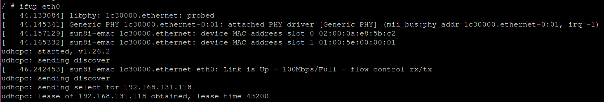
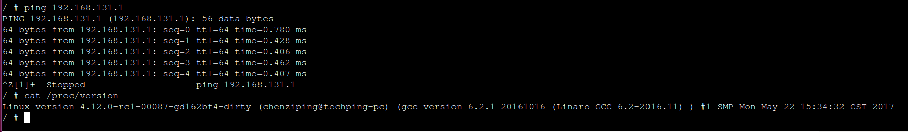

以太网使用指南
U-Boot适配Ethernet
U-Boot
2017已经支持了sun8i-emac的驱动，只需要在编译时选上并且修改dts就行。
- 进入u-boot源码目录：
make LicheePi_Zero_defconfig
make menuconfig

- 选择 Device Drivers --->

- 选择 Network device support ---> 并选中 Allwinner Sun8i
Ethernet MAC support

- 修改dts
sun8i-v3s-licheepi-zero.dts：
diff --git a/arch/arm/dts/sun8i-v3s-licheepi-zero.dts b/arch/arm/dts/sun8i-v3s-licheepi-zero.dts
index 3d9168c..b8b9fc3 100644
--- a/arch/arm/dts/sun8i-v3s-licheepi-zero.dts
+++ b/arch/arm/dts/sun8i-v3s-licheepi-zero.dts
@@ -49,6 +49,7 @@
compatible = "licheepi,licheepi-zero", "allwinner,sun8i-v3s";
aliases {
+ ethernet0 = &emac;
serial0 = &uart0;
};
@@ -81,3 +82,14 @@
usb0_id_det-gpio = <&pio 5 6 GPIO_ACTIVE_HIGH>;
status = "okay";
};
+
+&emac {
+ phy = <&phy0>;
+ phy-mode = "mii";
+ allwinner,use-internal-phy;
+ allwinner,leds-active-low;
+ status = "okay";
+ phy0: ethernet-phy@0 {
+ reg = <1>;
+ };
+};
sun8i-v3s.dtsi：
diff --git a/arch/arm/dts/sun8i-v3s.dtsi b/arch/arm/dts/sun8i-v3s.dtsi
index ebefc0f..cb81dd5 100644
--- a/arch/arm/dts/sun8i-v3s.dtsi
+++ b/arch/arm/dts/sun8i-v3s.dtsi
@@ -96,6 +96,11 @@
#size-cells = <1>;
ranges;
+ syscon: syscon@01c00000 {
+ compatible = "allwinner,sun8i-h3-syscon","syscon";
+ reg = <0x01c00000 0x34>;
+ };
+
mmc0: mmc@01c0f000 {
compatible = "allwinner,sun7i-a20-mmc";
reg = <0x01c0f000 0x1000>;
@@ -208,6 +213,17 @@
interrupt-controller;
#interrupt-cells = <3>;
+ emac_rgmii_pins: emac0@0 {
+ allwinner,pins = "PD0", "PD1", "PD2", "PD3",
+ "PD4", "PD5", "PD7",
+ "PD8", "PD9", "PD10",
+ "PD12", "PD13", "PD15",
+ "PD16", "PD17";
+ allwinner,function = "emac";
+ allwinner,drive = <SUN4I_PINCTRL_40_MA>;
+ allwinner,pull = <SUN4I_PINCTRL_NO_PULL>;
+ };
+
uart0_pins_a: uart0@0 {
pins = "PB8", "PB9";
function = "uart0";
@@ -270,6 +286,20 @@
status = "disabled";
};
+ emac: ethernet@1c30000 {
+ compatible = "allwinner,sun8i-h3-emac";
+ reg = <0x01c30000 0x104>, <0x01c00030 0x4>;
+ reg-names = "emac", "syscon";
+ interrupts = <GIC_SPI 82 IRQ_TYPE_LEVEL_HIGH>;
+ resets = <&ccu RST_BUS_EMAC>, <&ccu RST_BUS_EPHY>;
+ reset-names = "ahb", "ephy";
+ clocks = <&ccu CLK_BUS_EMAC>, <&ccu CLK_BUS_EPHY>;
+ clock-names = "ahb", "ephy";
+ #address-cells = <1>;
+ #size-cells = <0>;
+ status = "disabled";
+ };
+
gic: interrupt-controller@01c81000 {
compatible = "arm,cortex-a7-gic", "arm,cortex-a15-gic";
reg = <0x01c81000 0x1000>,
- 编译：
make ARCH=arm CROSS_COMPILE=arm-linux-gnueabihf-
- 烧写：
dd if=u-boot-sunxi-with-spl.bin of=${card} bs=1024 seek=8
- 使用Ethernet：

如果出现： *** ERROR:ipaddr' not set ，就需要设置下自己的ip：
setenv ipaddr 192.168.1.111
Kernel适配Ethernet
在最新的linux 4.14内核中，已经增加了对以太网的支持。
目前Linux
4.12还没又对sun8i-emac进行支持，所以Kernel要使用V3s的以太网要打sun8i-emac的补丁还有修改dts文件。
- 打上sun8i-emac补丁：
拉下我已经适配好的内核源码：https://github.com/techping/linux/tree/licheepi-zero
- 修改dts(上面git仓库是已经修改完的)：
sun8i-v3s-licheepi-zero.dts：
index 387fc2a..904e60e 100644
--- a/arch/arm/boot/dts/sun8i-v3s-licheepi-zero.dts
+++ b/arch/arm/boot/dts/sun8i-v3s-licheepi-zero.dts
@@ -50,6 +50,7 @@
aliases {
serial0 = &uart0;
+ ethernet0 = &emac;
};
chosen {
@@ -101,3 +102,10 @@
usb0_id_det-gpio = <&pio 5 6 GPIO_ACTIVE_HIGH>;
status = "okay";
};
+
+&emac {
+ phy-handle = <&int_mii_phy>;
+ phy-mode = "mii";
+ allwinner,leds-active-low;
+ status = "okay";
+};
sun8i-v3s.dtsi：
diff --git a/arch/arm/boot/dts/sun8i-v3s.dtsi b/arch/arm/boot/dts/sun8i-v3s.dtsi
index 7107596..65be2ab 100644
--- a/arch/arm/boot/dts/sun8i-v3s.dtsi
+++ b/arch/arm/boot/dts/sun8i-v3s.dtsi
@@ -40,7 +40,10 @@
* OTHER DEALINGS IN THE SOFTWARE.
*/
+#include <dt-bindings/clock/sun8i-v3s-ccu.h>
+#include <dt-bindings/reset/sun8i-v3s-ccu.h>
#include <dt-bindings/interrupt-controller/arm-gic.h>
+#include <dt-bindings/pinctrl/sun4i-a10.h>
/ {
#address-cells = <1>;
@@ -93,6 +96,12 @@
#size-cells = <1>;
ranges;
+ syscon: syscon@1c00000 {
+ compatible = "allwinner,sun8i-h3-system-controller",
+ "syscon";
+ reg = <0x01c00000 0x1000>;
+ };
+
mmc0: mmc@01c0f000 {
compatible = "allwinner,sun7i-a20-mmc";
reg = <0x01c0f000 0x1000>;
@@ -205,6 +214,17 @@
interrupt-controller;
#interrupt-cells = <3>;
+ emac_rgmii_pins: emac0@0 {
+ allwinner,pins = "PD0", "PD1", "PD2", "PD3",
+ "PD4", "PD5", "PD7",
+ "PD8", "PD9", "PD10",
+ "PD12", "PD13", "PD15",
+ "PD16", "PD17";
+ allwinner,function = "emac";
+ allwinner,drive = <SUN4I_PINCTRL_40_MA>;
+ allwinner,pull = <SUN4I_PINCTRL_NO_PULL>;
+ };
+
i2c0_pins: i2c0 {
pins = "PB6", "PB7";
function = "i2c0";
@@ -295,6 +315,31 @@
#size-cells = <0>;
};
+ emac: ethernet@1c30000 {
+ compatible = "allwinner,sun8i-h3-emac";
+ syscon = <&syscon>;
+ reg = <0x01c30000 0x104>;
+ interrupts = <GIC_SPI 82 IRQ_TYPE_LEVEL_HIGH>;
+ interrupt-names = "macirq";
+ resets = <&ccu RST_BUS_EMAC>;
+ reset-names = "stmmaceth";
+ clocks = <&ccu CLK_BUS_EMAC>;
+ clock-names = "stmmaceth";
+ #address-cells = <1>;
+ #size-cells = <0>;
+ status = "disabled";
+
+ mdio: mdio {
+ #address-cells = <1>;
+ #size-cells = <0>;
+ int_mii_phy: ethernet-phy@0 {
+ compatible = "ethernet-phy-ieee802.3-c22";
+ reg = <1>;
+ clocks = <&ccu CLK_BUS_EPHY>;
+ resets = <&ccu RST_BUS_EPHY>;
+ };
+ };
+ };
gic: interrupt-controller@01c81000 {
compatible = "arm,cortex-a7-gic", "arm,cortex-a15-gic";
reg = <0x01c81000 0x1000>,
- 进入内核目录：
make sunxi_defconfig ARCH=arm
make menuconfig ARCH=arm
选择 Device Drivers --->
选择 Network device support --->
选择 Ethernet driver support --->
选择
[*] STMicroelectronics devices x x <*> STMicroelectronics 10/100/1000/EQOS Ethernet driver <*> STMMAC Platform bus support x x < > Support for snps,dwc-qos-ethernet.txt DT binding. <*> Generic driver for DWMAC x x <*> Allwinner GMAC support x x <*> Allwinner sun8i GMAC support编译
make ARCH=arm CROSS_COMPILE=arm-linux-gnueabihf-
得到zImage和sun8i-v3s-licheepi-zero.dtb
- 烧写
将内核、dtb、rootfs刷入sd卡中，启动：
ifup eth0

eth0启动成功！

Ethernet驱动适配成功！